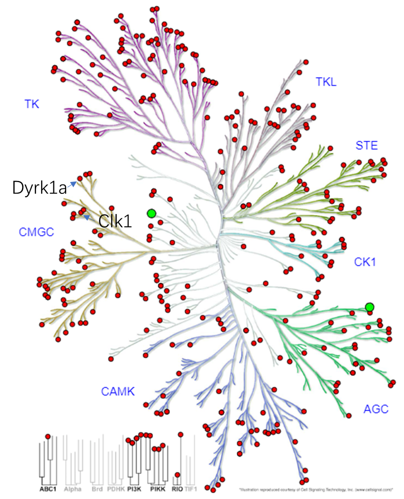

The Kinase Dyrk1a and CLK1 are very close to each other, they all belong to the CMGC family.
image:KLIFs , modified on powepoint to lable Dyrk1a and Clk1.
The Morris group has previously developed some 6-azaindole cored, mainly by the previous Ph.D. student Steve Butler. Based on Steve's and my work, the early stage work was summarized in the 2019 NSW Organic One Day Symposium Poster, in which several 7-position substituted 6-azaindole compound proposed
Based on Maestro Induced fit docking (Schrodinger2018-4) and cresset activity atlas model, some new structures were proposed as the below image.
32 compounds structures proposed for the second year reviewThe logic here is :
1. Build two separate SAR models for Dyrk1a and Clk1 respectively.
2.New compound structures were proposed based on the Morris group’s previous work
3. Two predicted pIC50 was calculated, the one with higher Dyrk1a pIC50 was chosen
4. Retrosynthetic analysis of the compound, 28 and 32.
5.Synthesis of the compound.
6.In-vitro activity testing.
Image of 28 and 32, which are predicted to have 10 folds selectivity for Dyrk1a over Clk1.It will be good if the compound could be analyzed by predictive retrosynthesis in Reaxy. It seems such great function now can only provide to commercial usage, but the related paper is a nature paper about predictive retrosynthesis.